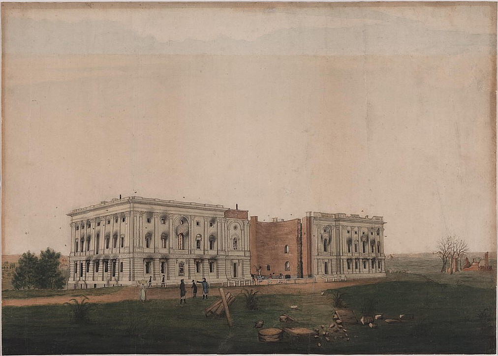

Directions: Fill in the chart as we study each part of the lesson. Keep this page in your notebook. You will use it again on the review day before the unit test.

| Part of the war | What happened | Who bore the cost | What it settled or left open |
|---|---|---|---|
| The causes at sea | |||
| The embargo at home | |||
| Tecumseh and the West | |||
| The war fought | |||
| Peace and its timing |
The war in one paragraph. Using at least three rows of the chart, write a paragraph that answers the lesson question. Why did the United States go to war with Britain again, and what did the war actually settle?
| Part of the war | What happened | Who bore the cost | What it settled or left open |
|---|---|---|---|
| The causes at sea | Britain and France, at war since 1803, seized American ships under the Orders in Council and the French decrees, and Royal Navy officers impressed American sailors into British service, thousands taken across the years. | American sailors carried off to foreign warships, and merchants and farmers whose cargoes and markets the blockades cut off. | Nothing before 1812. Madison ranked impressment first in his war message of June 1, 1812, and Congress declared war by the closest vote in the nation's history. |
| The embargo at home | The Embargo Act of December 1807 closed every American port to foreign trade to force Britain and France to respect neutral rights without a war. | American ports, sailors, and merchants: exports fell by about four fifths in a year, harbors stood idle, and federal enforcement fell on American citizens. | Nothing abroad. Congress repealed the act in 1809 with impressment and the Orders in Council untouched. |
| Tecumseh and the West | Tecumseh built a confederacy on the claim that the land belonged to all Native nations in common, and in November 1811 Harrison fought at Tippecanoe and burned Prophetstown in his absence. | The confederacy's nations, whose town was burned and whose claim Harrison refused at Vincennes in 1810 and on the battlefield in 1811. | The confederacy turned openly to Britain, and the war in the West became a war over whether the Old Northwest would be Native country or American states. |
| The war fought | The Canada invasions failed, York and Washington were burned in turn, Fort McHenry held through the bombardment Key watched, and Jackson took twenty three million acres of Creek land after Horseshoe Bend. | The burned capitals' people, the garrisons and fleets, and the Creek nation, whose land transfer was the war's largest. | Baltimore held and Canada stood beyond reach, while the war's largest gain in land came at a Native nation's expense. |
| Peace and its timing | Hartford's Federalists proposed amendments as Ghent was signed on December 24, 1814, and Jackson won at New Orleans on January 8, 1815, before the news crossed the Atlantic. | The Federalist Party, ruined by the report's timing, and the British army below New Orleans, destroyed by a battle fought after the peace. | Ghent restored the boundaries of 1811 and said nothing about impressment or neutral rights, while in practice the western confederacies were broken and Canada was confirmed. |
The war in one paragraph. Strong answers run the chart as one account. The United States went to war because two empires at war had made American trade a prize and American sailors a recruiting ground, because Jefferson's embargo had failed to move either empire and had punished Americans instead, and because in the West the same years brought Tecumseh's confederacy and the fight over the Old Northwest to open war. What the war settled was written less in its treaty, which restored the boundaries of 1811 and fell silent on every stated cause, than around it: Canada confirmed, the western confederacies broken, the Federalists ruined by their own report's timing, and a republic persuaded it had won its independence a second time.